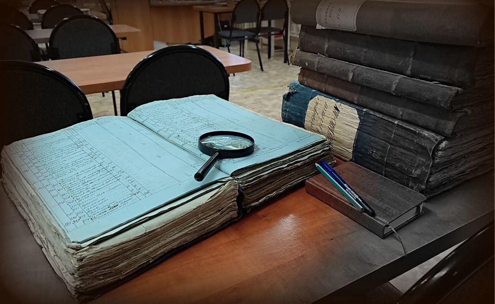

О Государственном архиве Астраханской области
Государственный архив Астраханской области является одним из крупнейших хранилищ документального наследия региона. Архив осуществляет комплектование, хранение, учет и использование документов Архивного фонда.
В фондах архива содержатся документы органов государственной власти, учреждений, предприятий и общественных организаций, а также уникальные исторические материалы, фотографии, карты и рукописи.
Факты об архиве
- Основан: 1919 год
- Единиц хранения: более 1 500 000
- Древнейший документ: 1702 год
- Самая большая рукопись: Купчатая грамота ⅩⅤⅢ века - 2 метра
- Ежегодный прирост: +5000 единиц хранения
- Читальный зал: 30 мест
